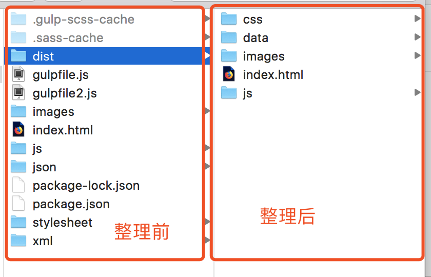
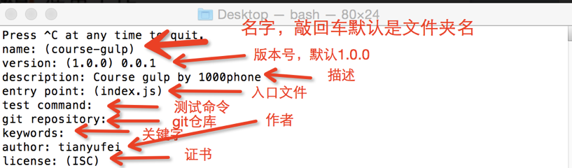
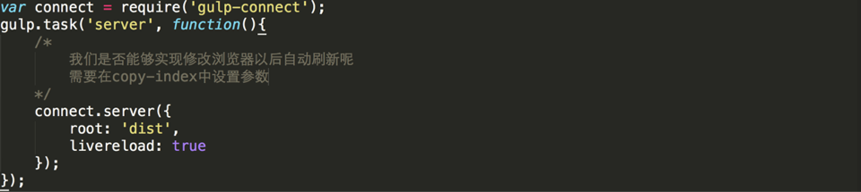
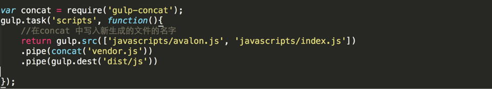

学习目标：
1.Gulp的介绍
2.Gulp的安装
3.Gulp的应用
Gulp的介绍
Gulp 是基于node.js的一个前端自动化构建工具，开发这可以使用它构建自动化工作流程（前端集成开发环境）。
使用gulp你可以简化工作量，让你把重点放在功能的开发上，从而提高你的开发效率和工作质量。

普通开发 css -> min.css
Js -> min.js
一、安装node.js
注意先要安装node.js 安装node.js一路下一步就好了
安装gulp 在mac版本下安装gulp
sudo npm install gulp -g
windows中直接省略sudo进行安装就可以了
【注】如果大家使用npm下载插件的时候，发现下载不下来，我们需要npm换成国内的淘宝源。
接下来所有npm开头的命令，大家都需要换成 cnpm命令。
【注】只要开始使用cnpm的命令了，就必须都使用cnpm的名字。
点开始键，选项下node.js的安装目录，下选项 start node
点开开始键windows，cmd，敲回车。配置node.js环境变量。
C:
D:
window电脑的同学，要先切换盘符，再去进入建立好的文件夹
SEO 搜索关键字
linux命名
cd 路径 进入你磁盘中的某一个文件夹
二、Gulp项目的创建
2.1

/*
^ 保留第一位版本号，后面两位版本找最新的
~ 保留前两位版本号，最后一位找最新的
就是下载这个版本的gulp
*/
2.2
现在我们可以使用 package.json 进行gulp的配置
如果要使用gulp 需要在工程目录下重新安装gulp
使用命令 npm install gulp --save-dev
npm i gulp -D
--save-dev 将gulp安装的信息保存packpage.json
2.3
如果你想删除node_modules目录 可以使用命令
rm -rf node_modules/
删除以后，我们可以使用package.json中之前设置好的依赖继续进行安装
npm install (就不需要输入后面的那些命令了)
这样我们就建好了一个项目
二、使用Gulp创建任务
使用gulp创建任务 gulpfile.js 这个js文件是我们gulp非常重要的配置文件
配置完这个文件 我们就可以使用gulp了
在根目录下新建一个js文件 gulpfile.js
在命令行中输入 gulp 任务名， 当然我们可以设置默认任务
三、Gulp具体的一些功能
gulp.src().pipe(gulp.dest())
这个章节我们实现两个功能 1、读取将要处理的文件 2、把处理好的文件放在指定地方
gulp.src 可以给我们找出需要处理的源文件
pipe 来处理找出的文件 pipe可以理解为管道 每一个管道我们都可以指定任务去处理
gulp.dest 最后通过这个命令将处理好的文件放在指定的地方
完成一个文件的拷贝，我们可以通过上述命令完成
return gulp.src('index.html').pipe(gulp.dest('dist'));
四、Gulp实现index.html的拷贝
五、Gulp实现图片的拷贝
六、Gulp实现两个文件夹拷贝到一个目标文件夹中
下面我们来看一下如何将两个文件夹中的内容拷贝到一个目标文件夹中
下面我们来创建多任务文件夹拷贝
在我们日常开发中还可能有一些特殊的需求
比如，我们在拷贝文件的时候，可以排除一些文件
通过数组将这两个文件写在一起
在前面加!可以过滤掉这个文件，使这个文件不被拷贝
return gulp.src(['xml/*.xml', 'json/*.json', '!json/secret.json']).pipe(gulp.dest('dist/data'));
七、Gulp一次性执行多个任务
上述我们通过三个任务完成了拷贝工作，那么我们通过什么方式可以一次性执行上述三个任务呢
八、Gulp的监听
除了上述文件拷贝的功能以外，我们还可以通过gulp去监听工程中文件的变化
九、Gulp的插件
下面我们来看一下gulp插件的入门操作
gulp本身没有什么特别的功能 只能读取文件、监视文件
我们可以通过插件来拓展gulp的功能
比如 我们可以通过插件 遍历less或者sass 可以将很多文件拼合在一起进行压缩、还可以优化图片的尺寸
关于gulp插件，我们可以去访问gulp相关的插件网站
十、使用gulp-scss编译css文件
如果 我们想要通过gulp去编译scss文件成css文件 我们可以安装gulp-scss插件
通过下述命令 进行安装
sudo npm install gulp-sass —-save-dev
安装好以后 我们就可以使用gulp-sass编译文件了
【注】注意如果使用的是windows系统，请使用gulp-sass
十一、gulp-connect来启动一个服务器
我们可以通过gulp-connect来启动一个服务程序
sudo npm install gulp-connect --save-dev

十二、gulp-concat合并文件
sudo npm install gulp-concat --save-dev
在这里我们将两个js文件进行合并

十三、gulp-uglify文件压缩
下面我们来实现一下文件的压缩
我们先安装插件
sudo npm install gulp-uglify --save-dev
引入插件以后，我们不需要新建任务啦,直接在scripts任务中进行修改就好
十四、gulp-rename重命名
我们通过上述的操作压缩完成以后，发现，新压缩的文件直接将旧的文件给替换掉了，也就是说原来的版本没有了，我们能不能保存没有压缩和已经压缩了的两个文件呢
这样的话我们就需要另外一个插件
sudo npm install gulp-rename --save-dev
十五、gulp-minify-css压缩css
上面我们看了如何压缩js文件，下面我们来看一下如何压缩css
sudo npm install gulp-minify-css --save-dev